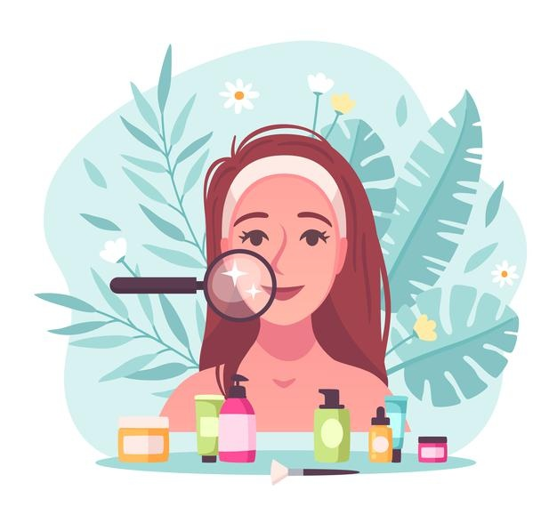

Beauty Tips For Girls
Every girl strives to maintain her beauty. Some are naturally beautiful, while some need to take certain steps to achieve that beauty. It is necessary to support your beauty not only to be the most popular girl in town, but also to boost your confidence and self-esteem.
- Use a mild cleanser to clean your face thoroughly at least twice a day in circular motion and wash it off.
- Follow it up with toning. Use a good quality mild toner.
- After toning, apply a moisturizer. Moisturizing keeps your skin healthy and prevents dryness.
- Get an all over body scrub to remove dead skin from body areas like the shoulders, back, and chest.
- Moisturize your lips to avoid drying them out.
- Try to keep your hair close to your natural hair color. Avoid harsh coloring.
Beauty Tips For Boys
- Drink plenty of water. And if your skin still feels a little dry, apply lotion after you shower. Use a body lotion on, well, your body and get a face moisturizer for your face.
- Add a daily cleanser into your morning or night routine to cleanse your face from pollution, dust, sweat and dirt from.
- Ideally, a guy should apply sunscreen every two hours. This will help reduce dark tan bands on the forehead and pigmentation.
- Guys tend to brush aside moisturizing as useless, but this step will pretty much decide how your skin turns out as it ages.
Beauty Tips For Women
- Respect you complexion and steer clear of harsh, dehydrating ingredients.
- Supercharge your serum and opt for something vitamin-rich, which will help to combat free radicals, preserve precious collagen and maintain skin’s strength and elasticity.
- ALWAYS wear sunscreen; it is the single most important thing you can do to protect against the ravages wrought by UV exposure.
- Bedtime is prime time for deep moisturizing, fighting future lines, plus treating your lips, cuticles, heels, and other problem areas.
- Aim for seven to nine hours of beauty sleep per night.
Beauty Tips For Men
Men too need their daily dose to look good and feel good. Even if you can not work all of these beauty tips for men into your daily routine, starting to do a few of these will help your skin and hair. You will look better, but more importantly, you will feel better!
- Splash warm water on your face or even better; take a shower to open up your pores to allow dirt out.
- Moisturize your skin with a men’s face moisturizer by adding a dime-sized amount to your entire face.
- You need to find a shampoo built for men to keep your hair and scalp happy without drying either out.
- You may have heard that guys don npt need conditioner. But a conditioner will add back any moisture your shampoo strips away.